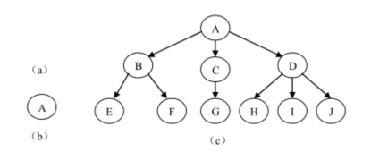
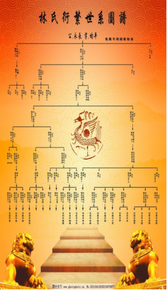
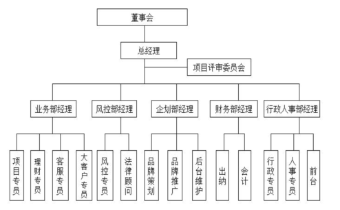
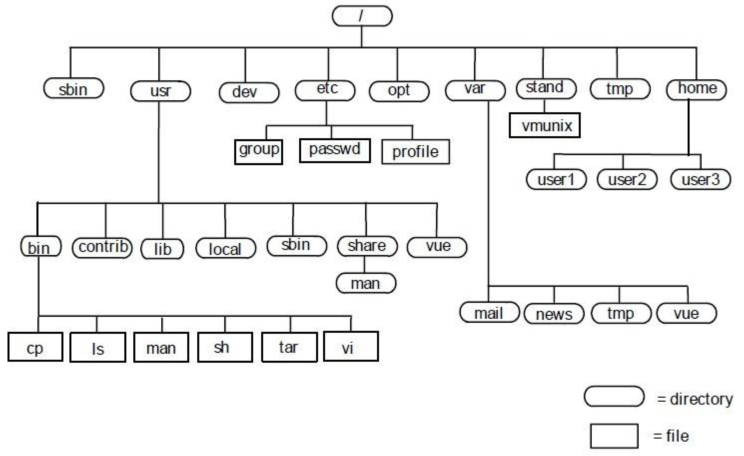
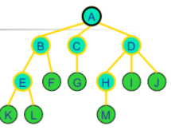
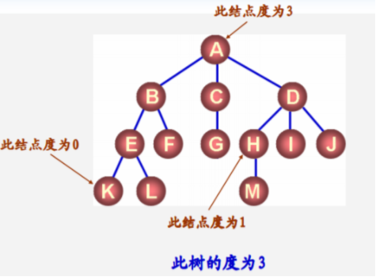
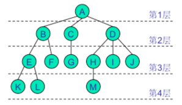
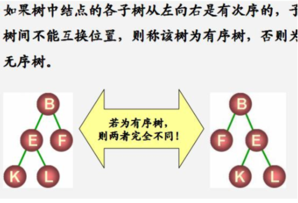
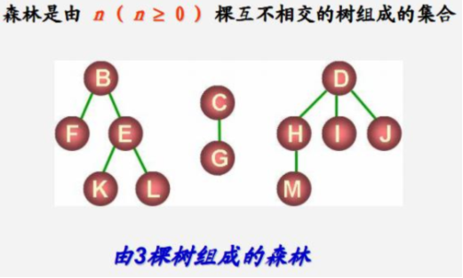

树
树是由一个集合以及在该集合上定义的一种关系构成的。集合中的元素称为树的结点，所定义的关系称为父子关系。
父子关系在树的结点之间建立了一个层次结构。
树的结点包含一个数据元素及若干指向其子树的若干分支。
在这种层次结构中有一个结点具有特殊的地位，这个结点称为该树的根结点，或简称为树根。
我们可以形式地给出树的递归定义如下：
树（tree ）是 n（n ≥ 0）个结点的有限集。它
1) 或者是一棵空树（n = 0），空树中不包含任何结点。
2) 或者是一棵非空树（n > 0），此时有且仅有一个特定的称为 根（root ）的结点；
当n > 1 时，其余结点可分为m（m > 0）个互不相交的有限集T 1 ，T 2 ，…，T m ，
其中每一个本身又是一棵树，并且称为根的 子树（sub tree） ）。

例如图 （a）是一棵空树、（b）是只有一个根节点的树、（c）是一棵有 10个结点的树，其中A是根，
其余的结点分成 3 个不相交的集合：T1 ={B,E,F}、T2 ={C,G}、T3 ={D,H,I,J}，每个集合都构成一棵树，且都是根A的子树。
生活案例：树：单位组织架构、族谱
技术案例：文件系统。
 

结点的度与树的度
结点拥有的子树的数目称为结点的 度（Degree） ）。
度为 0 的结点称为 叶子（leaf ）或终端结点。
度不为 0 的结点称为 非终端结点或 分支结点。除根之外的分支结点也称为内部结点。
树内各结点的度的最大值称为树的度
 
结点的层次和树的深度
结点的 层次（level） ）从根开始定义，层次数为1的结点是根结点，其子树的根的层次数为2。
树中结点的最大层次数称为树的 深度（Depth ）或 高度。

父亲、儿子、兄弟
父亲（parent）：一个结点的直接前驱结点
儿子（child）：一个结点的直接后继结点
兄弟（sibling） ：同一个父亲结点的其他结点
结点 A 是结点 B、C、D 的父亲，结点 B、C、D 是结点 A 的孩子。
由于结点 H、I、J 有同一个父结点 D，因此它们互为兄弟。
祖先、子孙、堂兄弟
将父子关系进行扩展，就可以得到祖先、子孙、堂兄弟等关系。
结点的 祖先是从根到该结点路径上的所有结点。
以某结点为根的树中的任一结点都称为该结点的 子孙。
父亲在同一层次的结点互为 堂兄弟
有序树、m 叉树、森林
如果将树中结点的各子树看成是从左至右是有次序的，则称该树为 有序树；
若不考虑子树的顺序则称为 无序树。
对于有序树，我们可以明确的定义每个结点的第一个孩子、第二个孩子等，直到最后一个孩子。
若不特别指明，一般讨论的树都是有序树。

树中所有结点最大度数为 m 的有序树称为 m 叉树。
森林（forest ）是 m（m ≥ 0 ）棵互不相交的树的集合。对树中每个结点而言，其子树的集合即为森林。
树和森林的概念相近。删去一棵树的根，就得到一个森林；反之，加上一个结点作树根，森林就变为一棵树。
